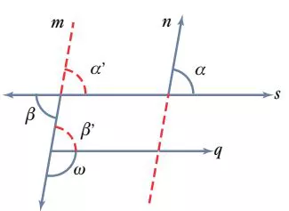

Rectas paralelasDos rectas que están en un mismo plano son paralelas (||) cuando coinciden en todos sus puntos o en ninguno.
En la figura anterior, las rectas l y m no son paralelas porque están en planos distintos. En cambio, n y m si son paralelas porque están en el mismo plano y no tienen puntos en común.
Rectas secantesCuando una recta atraviesa varias paralelas es una transversal (o secante) para éstas.
En la siguiente figura, la recta t es una transversal para las rectas m y n. Cuando dos paralelas son cortadas por una transversal se forman ocho ángulos.
Estos ángulos se asocian por pares y se agrupan en tres tipos:
Una propiedad exclusiva de las rectas paralelas es que los pares de ángulos pertenecientes a un mismo grupo son iguales entre sí.
Propiedad fundamental de las paralelas
En rectas paralelas, los ángulos correspondientes son iguales. Lo mismo ocurre con los ángulos alternos externos y los alternos internos.
La afirmación recíproca también es verdadera. Ésta, sin embargo, opera como un criterio para determinar si dos rectas son paralelas o no.
Criterio de paralelismo
Si al cortar dos o más rectas con una transversal se obtienen ángulos correspondientes o alternos iguales, las rectas son paralelas.
Ejemplo 1. En la figura, las rectas s y q son paralelas, lo mismo que las rectas m y n.
a) Si α = 34°, ¿Cuánto miden α’ y β?
b) ¿Cuánto mide el ángulo ω?

Solución
a) α = α’ = 34° por ser correspondientes; α’ = β = 34° al ser opuestos por el vértice; β’ = β = 34° por ser alternos internos.
b) ω = 180° - 34° = 146°.
Ejemplo 2. Un paralelogramo es una figura con cuatro lados, paralelos dos a dos. Argumenta por qué es cierto que en cualquier paralelogramo:
a) Los ángulos consecutivos son suplementarios.
b) Los ángulos opuestos son iguales.
Solución
Por hipótesis, las rectas AB y CD son paralelas, lo mismo que AC y BD.
a) α = α’ por ser correspondientes. Por tanto, α’ + β = α + β = 180°.
b) α = α’ = α’’ por ser, en ese orden, correspondientes y alternos internos.
Ejemplo 3. Cuando vemos de frente, la visión de cada uno de nuestros ojos es de 120°. ¿Cuántos grados de visión abarca la zona común de ambos ojos?
Solución
El campo visual común es de 120°.
Considerando paralelos los rayos, \(\varphi\) = 120°, por ser ángulos correspondientes.